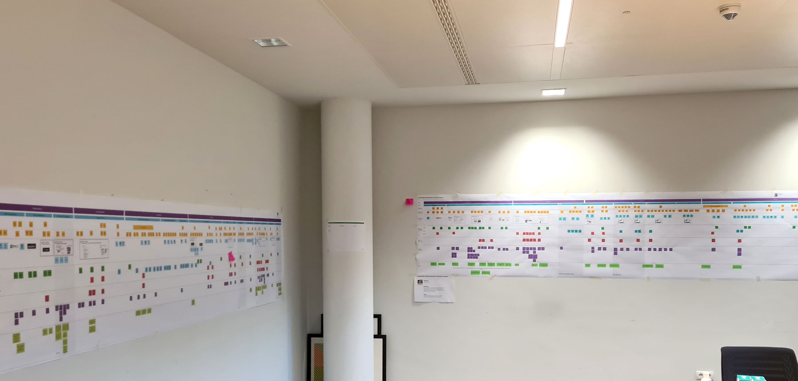

Personas, customer journeys, archetypes pilot project
Client: International chemistry company
Project duration: 6 months

Challenge:
A pilot project based on the development of personas, customer journeys and archetypes
Requirement:
The company with various departments in different spades would like to develop personas and customer journeys for one department with a pilot project. This procedure is to be described in a playbook and clarified in training courses so that the company is able to independently apply these methods to other departments.
Furthermore, if possible, cross-departmental archetypes should be developed.
Solution:
In the first step, 13 stakeholder and 9 customer interviews were conducted with relevant people in EMEA.
The interviews served to create the personas and to develop the customer journeys, which were further developed after the completion of the personas so that they fit the perspective of a persona and the corresponding scenario. The various journeys were initially created digitally and then printed out for further processing in physical workshops. After printing out the journey, there was also an eye opener how big the journey was in reality, because here we had partially more than 4 meters.